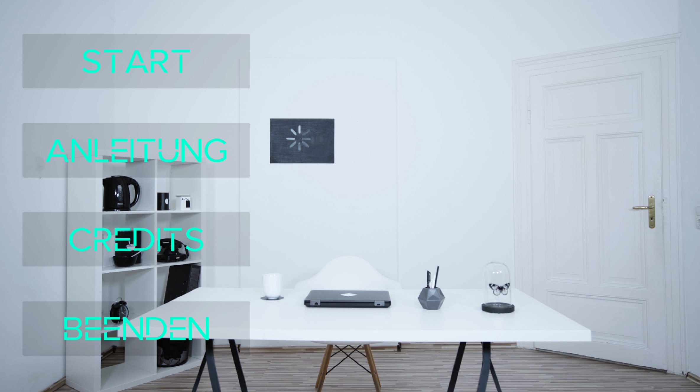
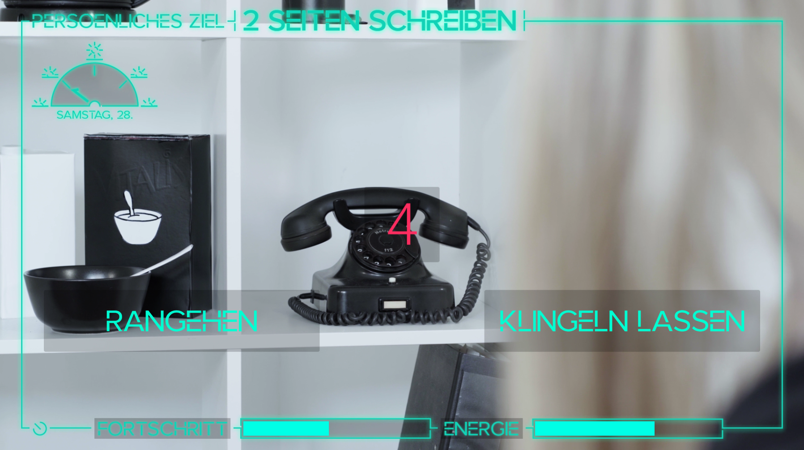

As a full time programming intern for six months at the German indie games developer studio Studio Fizbin.
Music Box is a cozy coop music puzzle experience taking place in a limited and rather small world of an unusual music box, where two players need to repair the music of the box, one inside, and one outside. I worked on the game as a game designer, project manager and the project lead during a collaborative university project. Play. Game Concept
Music Box - Teaser
Overload is a decision-based short movie project, which lets you step into the shoes on Alyssa during her morning. Her ultimate goal is to write her assignment and gain lots of progress. However, she also needs to keep track of her energy level. Over the course of four minutes, you can make about six decisions of how Alyssa should proceed with her day. Starting with simple questions like café or tea, both affecting her progression and energy level in one way or another. The project was braced by film students whereas I did all the programming and supported them with their decisions-based game design. Overload is simple and clean in its message of reminding oneself to sometimes take a break from work, especially when you are passionate about it (and also when you're not).


